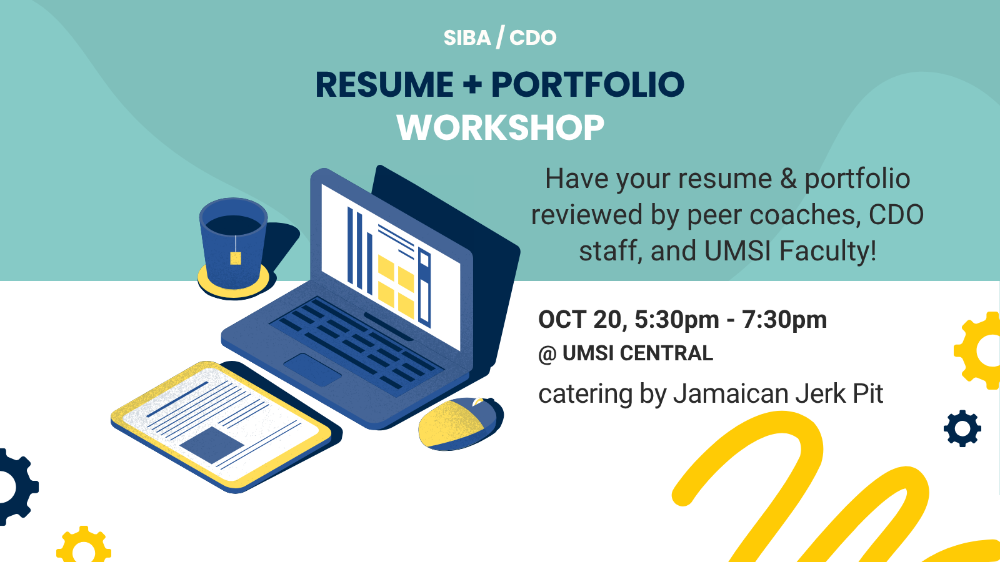

Create an Impressive Portfolio to Showcase Your Work
A well-crafted portfolio is a powerful tool to demonstrate your skills, experiences, and accomplishments to potential employers. It provides tangible evidence of your capabilities and allows you to stand out in a competitive job market.
On this page, you'll find tips and resources to help you build an effective portfolio that highlights your strengths and aligns with your career goals.
Portfolio Building Tips
- Select Your Best Work: Choose projects that showcase a range of skills and highlight your strengths. Quality over quantity is key.
- Organize Clearly: Structure your portfolio in a logical manner, making it easy for viewers to navigate and find relevant information.
- Provide Context: For each project, include a brief description outlining the objectives, your role, the tools used, and the outcomes.
- Keep It Updated: Regularly update your portfolio with new projects and experiences to reflect your current skills and achievements.
- Choose the Right Format: Decide between a digital or physical portfolio based on your industry and the preferences of potential employers.